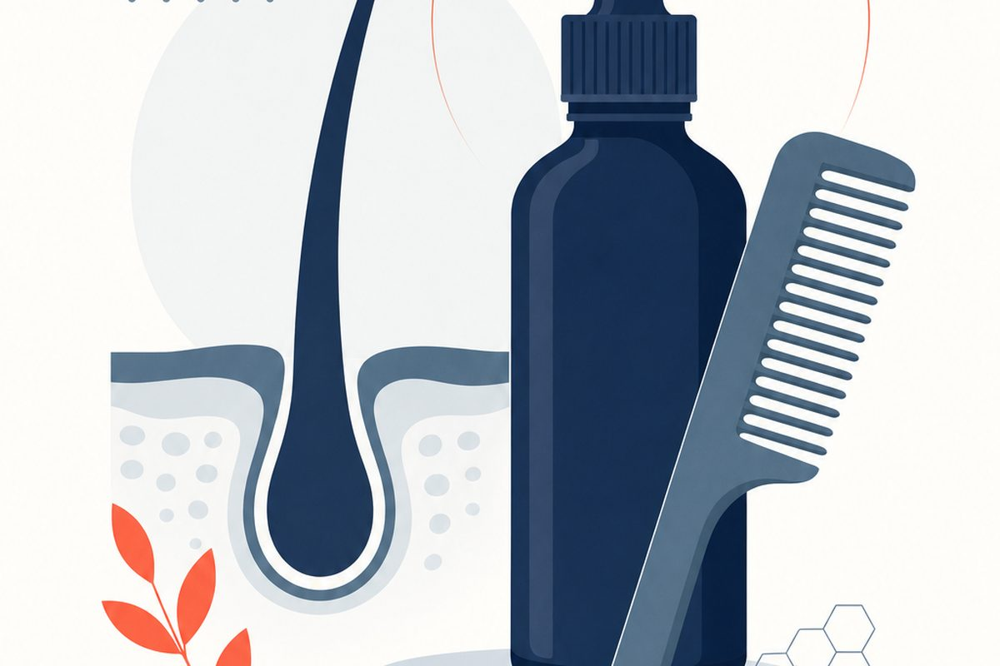

Head Lice Treatment: 3 Labels, 3 Retreatment Rules
A physician's evidence-based guide to adult head lice, live lice versus nits, and safe treatment review.

How do you treat head lice in an adult, and when should you retreat?
Key Takeaways
- Live crawling lice are the strongest evidence of active infestation. Nits can remain after successful treatment and can be mistaken for dandruff.[1][9][10]
- The exact product matters. Permethrin rinse starts on damp hair; the cited ivermectin and spinosad products start on dry hair.[4][5][6]
- Ten minutes is the application time for the three cited products, not a guarantee that the entire infestation is resolved in ten minutes.[4][5][6]
- Do not automatically repeat ivermectin lotion. Its cited OTC label requires healthcare-provider advice before reuse for the same infestation.[3][5]
- Failure can reflect misdiagnosis, incomplete application, conditioner use, reinfestation or resistance. It does not prove resistance by itself.[2][9][10]
- Check household contacts and coordinate treatment for affected people. Avoid blanket pesticide treatment of everyone or spraying the home.[1][2][9][13]
How do you get rid of head lice as an adult?
What is the best next step when lice treatment seems not to work?
Do not start by adding another product. First establish whether live lice are still present, identify exactly what was used, and check whether its full instructions were followed. A crawling louse is better evidence of ongoing infestation than itching, a sensation of movement, or white specks on hair. If the diagnosis remains uncertain, a clinician can inspect the scalp and material collected with a detection comb.[1][2][9][10]
For confirmed active head lice, select an appropriate product and use its own directions from start to finish. Concentration, formulation, whether hair should be wet or dry, contact time, amount, rinsing and repeat-treatment instructions can all differ. The three labels discussed most closely in this guide are permethrin 1% rinse, ivermectin 0.5% lotion, and spinosad 0.9% suspension. This is not a direction to use all three.[3][4][5][6]
The treatment plan has two parts: treating the infested head and reducing opportunities for reinfestation. Check household members and close contacts, coordinate the appropriate treatment for affected people, and clean recently used head-contact items. Extensive house spraying is not the missing step when a product appears to fail. A careful history and a reliable scalp check usually provide more useful information.[1][2][9][13]
Ask for professional advice before reapplying a product that has failed, combining medicines, or switching to tablets. A few slow-moving lice soon after treatment can differ from lice moving as actively as before treatment. The CDC specifically separates those situations in its follow-up instructions. The answer is not always to wait, and it is not always to treat again: it depends on what is seen and which product was used.[2][3][13]
This guide concerns adult head lice, not scabies, pubic lice, body lice or animal parasites. Those conditions require different evaluation and instructions. Do not borrow a scabies cream regimen, an animal product, or a pediatric prescription simply because the ingredient name looks familiar. Adults with significant scalp wounds, spreading redness, pus or fever need in-person assessment rather than repeated self-treatment.[1][3][9]
Lice eggs vs. dandruff: what are you actually seeing?
Live lice, unhatched eggs and empty shells are different findings
Head lice are small crawling insects that live on the scalp and feed on blood. The term “nits” is used variably for eggs and egg casings, so the word alone does not tell you whether an egg is viable or an infestation is active. A fine-toothed detection comb, good light and a careful examination behind the ears and near the nape can help identify live lice.[1][9][10][13]
Dandruff and other debris generally move or comb away more easily; nits are firmly attached to individual hairs. That clue is useful, but it is not a guarantee that a speck is a living egg. Hair-product residue, lint and other material can also be mistaken for lice-related findings. If repeated inspections are inconclusive, an examination is preferable to applying insecticide to an uncertain diagnosis.[1][9][10][13]
CDC guidance notes that nits close to the scalp are more concerning than nits farther away. Nits found more than one-quarter inch from the scalp are usually hatched or dead, and when only those distant nits are seen without live nymphs or adults, the infestation is probably old. This distance is a clue used alongside the examination, not a precise home test that determines every treatment decision.[1][9][10]
Swipe horizontally on a small screen to read every column.
| Finding | What it may represent | Reasonable next step |
|---|---|---|
| A live crawling louse collected from scalp or hair | Active head-lice infestation | Confirm product choice, use the exact label, and check close contacts. |
| Firmly attached material near the scalp, but no live lice found | Possible eggs; viability and diagnosis may be uncertain | Repeat careful detection combing or ask a clinician to identify the finding. |
| Only distant nits after a completed treatment | Old eggs or empty casings can persist | Do not assume treatment failure from their appearance alone. |
| Loose white flakes that move easily | Dandruff or other debris is possible | Evaluate the scalp condition rather than automatically using lice medicine. |
Consumer labels sometimes use the broad instruction to treat when lice or nits are found. CDC and clinical reviews provide more diagnostic context, including that old distant nits alone may not need treatment. These wordings are not identical. If a label appears to recommend treatment but the only finding is uncertain or old debris, ask a pharmacist or clinician to resolve the diagnosis rather than treating endlessly.[1][4][5][9][10]
Can you have nits but no live lice?
Yes. Egg casings can remain attached to hair after lice have been killed, and eggs may look intact even when they are not viable. Itching can also reflect irritation rather than surviving insects. Finding material on the hair after treatment is therefore not enough, by itself, to decide that a product failed. Follow-up should look for live lice and account for the timing and exact treatment.[1][2][9][10]
Do not equate “nothing was seen in one quick look” with certain cure either. Lice are small and can be hard to find. Sectioning the hair and combing systematically improves the quality of the check. If you are repeatedly finding suspicious material but cannot identify it, keep a sample or clear photograph for a clinician rather than giving yourself a series of different pesticide treatments.[1][9][10][13]
A person may have very little itching with an early or light infestation, while another person may itch despite no longer having live lice. Symptoms and visible egg casings answer different questions. A treatment decision should take account of the observed insects, the scalp examination, exposure to affected contacts, and whether the previous course was used correctly.[1][2][9][10]
Nit removal can be helpful for inspection and for reducing confusion about what is new, but complete removal is not required for every medicine to work. The cited ivermectin label says nit combing is not necessary for its effect; CDC also says nit combing is not required with spinosad. Optional combing does not override the label, and the persistence of a few casings does not justify repeated doses of a single-use product.[2][3][5][6]
How do you use permethrin 1% lice treatment?
Permethrin 1% rinse: damp hair and a ten-minute contact time
The cited Nix Creme Rinse contains permethrin 1%. Its Drug Facts instructions say to wash with shampoo that does not contain conditioner, rinse, and towel-dry until the hair is damp but not wet. Shake the bottle and completely saturate the scalp and hair, especially behind the ears and at the back of the neck. Leave it on for ten minutes, but no longer, then rinse as directed.[4]
Do not use “damp hair” as an instruction for every lice product. Ivermectin lotion and spinosad suspension have different preparation instructions. Also check the active ingredient rather than assuming all products sold under a familiar brand are the same. A kit, rinse, lotion and physically acting product may have different instructions even when the packaging looks related.[3][4][5][6][10]
Permethrin retreatment: the label and CDC wording differ
The particular Nix label cited here calls for a second treatment if live lice are seen seven days or more after the first application. CDC says another permethrin treatment may be needed on day nine to kill newly hatched lice before they lay eggs. Those are related but not identical instructions. Use the exact package and the clinician’s plan, rather than treating every product as a universal day-seven or day-nine regimen.[3][4]
Permethrin kills live lice but does not reliably kill all unhatched eggs. That helps explain why follow-up and appropriately timed retreatment may matter. It does not mean that more frequent applications are better. If the lice seem as active as before treatment, talk to a clinician before simply repeating the same product or using more of it.[2][3][4][9]
The guide’s earlier statement that correctly used permethrin failure is automatically “a straightforward resistance picture” was too certain. CDC lists several causes of failure, including misdiagnosis, conditioner use, incorrect application, resistance and reinfestation. A careful review should address all of them. A resistance gene prevalence estimate also cannot predict whether a particular person’s lice will respond to a correctly used product.[2][3][9]
Permethrin 5% cream is a different formulation commonly used for scabies, not a stronger version of this label’s head-lice rinse. This guide does not recommend escalating from 1% rinse to 5% cream at home. If a properly used lice regimen fails, obtain a reassessment and an appropriate alternative rather than extrapolating a body-application regimen to the scalp.[3][4][9]
Ivermectin lotion for lice: why is it usually one application?
Topical ivermectin 0.5% is not an oral ivermectin regimen
The cited Sklice product is an over-the-counter ivermectin 0.5% lotion. Its directions specify dry hair and scalp, complete coverage from the scalp outward, a ten-minute contact time, and rinsing with water only. The label says to wait twenty-four hours before shampooing. Do not copy the damp-hair instructions from the permethrin rinse, and do not substitute tablets or a veterinary preparation.[5]
CDC explains that ivermectin lotion kills lice and appears to prevent newly hatched nymphs from surviving even though it does not directly kill eggs. This is why a product that is not an egg killer can still be used as a single application. The important practical instruction is the label’s single-use restriction, not a general assumption that every product needs two applications because eggs hatch later.[3][5][7]
Do not automatically repeat ivermectin lotion after nine or ten days
The exact OTC label says not to use it again on the same person for the same infestation without first talking with a healthcare provider. CDC gives the same caution. The earlier guide’s suggestion of a routine follow-up repeat when live lice persist could be read as permission to redose independently; this refresh removes that ambiguity. Continuing infestation needs a clinical discussion, not an automatic second tube.[3][5]
The randomized trials of topical ivermectin compared one application with vehicle and did not require nit combing. Their favorable results support the product’s activity, but they do not promise that every adult will be cured. Trial participants and household arrangements differed from real-world care, and the study was not an adult-only effectiveness trial. A treatment can work well on average while a particular person needs reassessment.[7]
Nit combing is optional for the cited product’s efficacy, although a comb can still help detect surviving lice or remove debris. If an infestation continues, bring the product name, dates, application details and any collected lice to the consultation. That information helps distinguish a use problem, reinfestation, uncertain diagnosis or a need for a different treatment.[2][3][5][9]
Oral ivermectin is a separate, prescription-only systemic treatment used off-label for head lice in selected circumstances. It is not the default next step for every itchy scalp and is not interchangeable with lotion. This guide does not supply an oral self-dosing schedule; clinician review of the diagnosis, medical history and safety is required.[3][9][12]
Spinosad for lice: when is a second treatment needed?
Spinosad 0.9% suspension: dry scalp and hair, then rinse
Natroba is the prescription spinosad 0.9% suspension discussed here. For the head-lice indication, the cited label says to shake the bottle, cover the dry scalp and dry hair, leave the medicine on for ten minutes, and rinse thoroughly with warm water. The amount needed depends on hair coverage; follow the actual prescription and label rather than rationing a bottle so several people can share an incomplete dose.[6]
CDC states that spinosad kills live lice and unhatched eggs, so routine retreatment is usually unnecessary. The cited label specifies a second treatment only if live lice are seen seven days after the first. The trigger is not simply itching, visible empty casings, or a wish to “make sure.” Do not reapply daily or combine another pediculicide without professional instructions.[3][6]
Nit combing is not required for spinosad treatment to work, although a fine comb may be used to remove dead lice and nits. It can also be helpful for follow-up observation. An inspection plan still matters even with a product that usually requires one application. Finding crawling lice at the labeled follow-up point is different from finding a few adherent empty shells.[2][3][6]
Spinosad also has a scabies indication with different body-application and washing instructions. Those directions must not be used for head lice. A lice treatment left on according to a scabies regimen is not “extra thorough” treatment. Confirm the condition being treated and follow the relevant section of the product information.[6]
Two older randomized studies found higher lice-free rates with spinosad than with the permethrin regimen studied, but the comparison included different combing requirements and mixed-age households. It supports spinosad as an option; it does not establish that every adult should skip an appropriate OTC treatment or that the study percentages are current nationwide adult cure rates.[8]
If a prescribed spinosad course does not resolve an infestation, return to the diagnosis, application history, timing and household exposure. A clinician can decide whether a labeled repeat, a different preparation or an in-person examination is the next step. More medicine without a reliable finding of active lice can add irritation without solving the original uncertainty.[2][3][6][9]
How do the three product labels compare?
These products share a ten-minute contact time in the cited labels but do not share a universal treatment course. Hair preparation and retreatment rules are the details most likely to be lost when advice is reduced to “use lice shampoo again next week.” Keep the actual box, leaflet or prescription information until treatment and follow-up are complete.[4][5][6]
Swipe horizontally on a small screen to read every column.
| Product discussed | Preparation and contact time | Repeat-treatment instruction |
|---|---|---|
| Permethrin 1% Nix Creme Rinse | Conditioner-free wash; towel-dry to damp hair; 10 minutes, no longer | Cited label: second treatment if live lice are seen seven days or more later. CDC discusses possible day-nine retreatment. |
| Ivermectin 0.5% Sklice lotion | Dry hair and scalp; 10 minutes; water-only rinse; wait 24 hours before shampoo | Do not reuse on the same person for the same infestation without healthcare-provider advice. |
| Spinosad 0.9% Natroba suspension | Shake; dry scalp and dry hair; 10 minutes; warm-water rinse | Repeat only if live lice are seen seven days after the first treatment. |
The table summarizes the exact products linked in the references, not every generic product or every item under these brand names. Product labeling can change, and an individual’s contraindications or clinician instructions can change the plan. If the packaging in your hand differs from the table, use the package and ask a pharmacist to reconcile the difference.[4][5][6]
Other medicines can be appropriate in selected cases, but adding every option to a home rotation is not safer. CDC describes malathion 0.5% as another option with important flammability precautions. It also describes benzyl alcohol and cautions that systemic ivermectin is off-label for lice. This guide does not give a self-directed sequence that cycles through all of them.[3][9]
The active ingredient, formulation and directions matter more than a recommendation to buy the “strongest” shampoo. A correctly selected medicine still needs enough product to cover the relevant hair and scalp. The comparison should help you ask specific questions about preparation and follow-up, not replace a safety review or a prescription.[2][3][4][5][6]
How long does lice treatment take, and how can you tell if it worked?
The contact time on the bottle is only one part of treatment. A ten-minute application does not mean no more checks are needed after ten minutes. Follow-up depends on the product’s activity against eggs and newly hatched lice, its repeat instructions, the quality of application, and whether an affected close contact remains a source of reinfestation.[2][3][4][5][6]
CDC says a few lice moving slowly eight to twelve hours after treatment do not require immediate reapplication; it can take time for lice to die. In contrast, if no dead lice are found and the lice seem as active as before, contact a healthcare provider before retreating. Do not use those early observations to invent a schedule that overrides the specific product’s warnings.[2][13]
The most useful follow-up finding is whether live crawling lice remain, rather than whether itching has disappeared or every nit has been removed. CDC advises checking and removing lice and nits every two to three days for the next two to three weeks after treatment, with product-specific differences such as no nit-combing requirement for spinosad. Keep the monitoring plan distinct from an application schedule.[1][2][3][9]
Treatment failure has several possible explanations
Work through the possibilities in order. Was there an active infestation originally? Was the correct product used on the correct wet or dry hair? Was there enough product and the full contact time? Was conditioner used when the directions advised against it? Was any required second treatment correctly timed? Have close contacts been examined? Resistance is one possibility, but not the only one.[2][3][9]
If you cannot reconstruct the previous course, write down what you do know and bring the container or a photograph of the label. Applying several products in quick succession makes it harder to identify both the cause of failure and the cause of irritation. A clinician may choose an alternative after an adequate course has failed, but that decision should be based on actual findings and the history.[2][3][9][13]
How do you remove lice eggs from hair safely?
A fine-toothed lice comb can help find crawling lice and remove attached material. Work under a bright light, divide the hair into small sections, begin close to the scalp, and comb outward. Examine what is collected rather than assuming every speck is an egg. The areas behind the ears and near the nape deserve attention because lice and nits are often found there.[1][9][13]
Be clear about the purpose of the session. Detection combing asks whether live lice are present; cosmetic nit removal removes attached eggs or casings. Mechanical treatment is a repeated, methodical effort to remove lice without a pediculicide. Those tasks overlap, but a quick cosmetic comb-through is not equivalent to a completed mechanical-treatment regimen.[9][10]
Wet combing can be an option for someone who wishes to avoid a medication or needs help with detection, but it is time-consuming and evidence varies by technique and study. It should not be described as a guaranteed one-session cure. If you choose a mechanical plan, get clear advice about technique and repeated inspection rather than stopping as soon as the hair looks cleaner.[9][10][13]
Conditioner can make a mechanical combing session easier, but it should not be used before a medicine whose instructions warn against it. Separate the combing method from preparation for a pediculicide. Likewise, do not assume every medicine requires combing to be effective: the cited ivermectin and spinosad instructions do not require nit removal for their treatment effect.[2][4][5][6][9]
Do not scrape the scalp, use sharp implements to dig at attached material, or continue forcefully through painful or damaged skin. Significant sores, pus, worsening tenderness or spreading redness need assessment. If the apparent “eggs” cannot be distinguished from debris, a clinician can help identify the material and evaluate other causes of scalp itching.[1][3][9][13]
Does hair dye kill lice? Which home remedies should you avoid?
Hair dye is not one of the verified treatment regimens used in this guide, and it should not substitute for confirming the diagnosis and using an appropriate lice treatment. The fact that a chemical changes hair color does not establish that it safely eradicates lice and eggs. We do not have adequate evidence here to give a reliable cure percentage, treatment schedule or prevention claim for hair dye.[2][9][10]
The same caution applies to bleaching, kerosene, gasoline, household insecticides, veterinary products and unverified mixtures. Do not turn a scalp infestation into a toxic exposure by increasing concentration or adding household chemicals. The medicines discussed in this guide are formulated for their labeled use; a different chemical or route is not an equivalent substitute.[2][3][4][5][6]
CDC says it does not have scientific evidence that suffocating lice with mayonnaise, olive oil, butter, margarine or similar substances is effective. BMJ’s older review discusses limited studies of certain specific formulations, not proof that any plant oil or kitchen preparation works. A small trial of one formulation cannot be generalized to an unrelated home mixture.[2][10]
Do not use a hot appliance as a way to improve a chemical treatment. CDC specifically warns that malathion is flammable and should not be used around smoking or electrical heat sources while hair is wet with the product. Even when a different medicine is being used, follow its directions rather than trying to increase activity with extra heat or contact time.[3][13]
An irritated scalp after repeated treatment can be mistaken for more lice. If there are no reliably identified crawling insects, adding another chemical may obscure the original diagnosis. Bring the products already used to a pharmacist or clinician and ask for a plan that addresses both active infestation, if present, and any treatment-related irritation.[1][2][3][9]
Shaving is not a required step in the three cited product labels or CDC treatment instructions. A preference to cut hair is a personal choice, not a required medical step in this guide. Appropriate coverage, accurate instructions and systematic follow-up remain the focus rather than a drastic shortcut.[2][4][5][6]
Do you need to treat everyone in the household?
Check household members and other close contacts instead of automatically applying a product to every person. CDC recommends treating infested people and the people they share a bed with at the same time. This is more specific than the old guide’s blanket instruction that all close contacts need treatment. AAD also emphasizes checking contacts rather than treating everyone without evidence of infestation.[1][2][9][13]
If several household members have lice, coordinate the timing of the appropriate treatment so one affected person is not left unaddressed while others complete their courses. Each person still needs the right product, adequate coverage and a safety review when relevant. A shared household does not justify using an adult prescription for a child or dividing a tube into doses too small to cover the scalp.[2][3][4][5][6]
Target cleaning to recently used items rather than attempting to sterilize the entire home. CDC advises washing and drying clothing, bedding and other items used in the two days before treatment, soaking combs and brushes in hot water, and vacuuming areas where the affected person sat or lay. Spending large amounts of time and money on whole-house decontamination is not necessary.[1][2][9][13]
CDC gives a hot-water laundry target of 130 degrees Fahrenheit and high-heat drying; items that cannot be washed or dry-cleaned can be sealed for two weeks. Product leaflets may give different cleaning details. Follow applicable product and fabric instructions, and do not copy a hot-water or heat instruction onto the person’s scalp. Household advice and scalp application instructions are different.[1][2][5][6]
Do not use fumigant sprays or fogs for head lice. CDC warns that they are unnecessary and can be toxic when inhaled or absorbed through the skin. Some older texts found in the connector search advised furniture spraying; that is not the approach adopted here. Vacuuming and targeted laundering are the relevant cleaning measures, not a pesticide cloud in the home.[1][2][9]
Head lice spread mainly through direct hair-to-hair contact and are not a sign of poor hygiene. They crawl rather than fly or jump, and pets do not spread human head lice. Discussing contact exposure without blame can make coordinated checking and treatment more practical. The aim is to manage a common infestation, not to label a household unclean.[1][9][13]
What do the trials show, and what are their limits?
The 2012 NEJM trials studied a single application of topical ivermectin 0.5% against vehicle, without nit combing. The pooled findings showed substantially more treated participants free of live lice after treatment. This supports an effective single-application option, but it is not a head-to-head trial proving ivermectin is superior to every other preparation, and the population was not restricted to adults.[7]
The spinosad-versus-permethrin report included two phase 3 studies in mixed-age households. In those trials, 84.6% and 86.7% of primary participants receiving spinosad were lice-free at the endpoint, compared with 44.9% and 42.9% receiving the studied permethrin regimen. The endpoint was fourteen days after the last treatment, not simply fourteen days after the first. Combing requirements also differed, and these are older trial results rather than current adult-only cure estimates.[8]
A separate 2010 NEJM trial compared oral ivermectin with malathion for difficult-to-treat infestation after previous topical failure. Its specific selected population and systemic regimen are not reasons to tell every adult with scalp itching to take tablets. The review here uses it to explain why systemic therapy belongs in an individualized clinical decision, not to provide a home prescription algorithm.[12]
The 2015 BMJ Clinical Evidence review helps explain diagnostic and study-quality limitations. Its literature search ended in 2014, and its evaluated comparisons do not constitute a current universal ranking of all US products. Older review advice can also predate an OTC switch or a revised label. Exact present-day instructions should come from the product in use, not an old comparison table.[5][9][10]
An EBSCO full-text review of abametapir was read after connector access was restored. It illustrates why medicines can differ in activity against eggs and later stages, but it is not used here to promise the availability of a specific newer medicine, to assign an adult cure probability, or to claim that TeleDirectMD offers every product it discusses. Studies and reviews require appropriate population and date context.[11]
Broad first-aid and diagnostic decisions are corroborated across CDC, the family-medicine review and BMJ/AAD material. Exact label timings and restrictions remain product-specific instructions, not claims of three independent clinical experiments. When sources differ, this guide identifies the difference rather than smoothing it into a universal schedule.[1][2][3][4][5][6][9][10][13]
When should an adult seek in-person care or a treatment review?
Seek prompt in-person assessment for fever with worsening scalp redness, pus, significant tenderness, extensive skin breakdown, eye-area involvement, or a diagnosis that cannot be established from the history and a careful look. Scratching can damage the skin, and an infected scalp or another skin disorder may need a different approach than another pediculicide. A photograph can support a consultation but does not always settle the diagnosis.[1][3][9]
Difficulty breathing, facial or throat swelling, collapse, or severe symptoms after a product exposure need emergency help. If a lice product is swallowed, contact Poison Control or emergency services as appropriate; the cited OTC labels give the US Poison Control number as 1-800-222-1222. Do not try to compensate for an accidental exposure by applying another product or continuing the treatment session.[4][5]
Swipe horizontally on a small screen to read every column.
| Situation | Appropriate next step | What not to assume |
|---|---|---|
| Stable adult, active lice identified, no major scalp injury | Label-directed treatment and follow-up; pharmacist or clinician for selection questions | Not every product needs the same repeat course. |
| Product seems not to work, diagnosis uncertain, repeated completed courses | Clinician review; in-person examination if needed | Persistent itch or nits do not prove resistance. |
| Fever, spreading scalp inflammation, pus, eye involvement or substantial wounds | Prompt in-person assessment | Routine remote lice treatment cannot replace examination of a complication. |
| Severe reaction, breathing symptoms or significant toxic exposure | Emergency services or Poison Control as appropriate | Do not wait for a routine video appointment. |
A video visit for a stable adult can review observed lice, products, application timing, contraindications and close-contact exposure. If the clinician can make a sufficiently reliable assessment, treatment advice or a prescription may be considered. When identification is uncertain, repeated adequate treatment has failed, or there are complications, an in-person examination is an equally valid and sometimes necessary route.[1][2][3][9]
This is an adult guide. A medication label may include pediatric ages, but that does not make TeleDirectMD a pediatric service or make an adult’s prescription suitable for a child. Pregnancy, breastfeeding, significant medical conditions and product sensitivities require individualized safety advice; this guide does not offer a separate pregnancy or pediatric treatment pathway.[4][5][6][9]
Before a review, write down the product’s active ingredient and concentration, treatment dates, hair preparation, contact time, whether a labeled repeat was used, and whether any live lice were collected afterward. Bring the actual package or clear photographs of the directions. Those details help a clinician make a specific next-step decision without treating every failure as resistance or every scalp symptom as lice.[2][3][9]
Frequently Asked Questions
The cited Nix label says to shampoo without conditioner, towel-dry to damp hair, saturate the scalp and hair, and leave the product on for ten minutes, no longer. Other products have different instructions, so check the actual container.[4]
References
- CDC. About Head Lice. June 4, 2024. Accessed October 19, 2026. https://www.cdc.gov/lice/about/head-lice.html
- CDC. Treatment of Head Lice. November 12, 2024. Accessed October 19, 2026. https://www.cdc.gov/lice/treatment/index.html
- CDC. Clinical Care of Head Lice. January 31, 2025. Accessed October 19, 2026. https://www.cdc.gov/lice/hcp/clinical-care/index.html
- DailyMed. Nix Creme Rinse, permethrin 1%, Drug Facts. Exact product label accessed October 19, 2026. https://dailymed.nlm.nih.gov/dailymed/drugInfo.cfm?setid=d6dfa64a-bb88-4438-b4e2-30c6fbb28f3e
- DailyMed. Sklice, ivermectin lotion 0.5%, OTC Drug Facts. Exact product label accessed October 19, 2026. https://dailymed.nlm.nih.gov/dailymed/drugInfo.cfm?setid=7579bdfe-a538-4bff-b7c7-df2c4b6f13db
- DailyMed. Natroba, spinosad topical suspension 0.9%, prescribing information. Head-lice indication. Accessed October 19, 2026. https://dailymed.nlm.nih.gov/dailymed/drugInfo.cfm?setid=72cf38f4-9ef4-4b0e-b085-b02f399e2592
- Pariser DM, Meinking TL, Bell M, et al. Topical 0.5% ivermectin lotion for treatment of head lice. The New England journal of medicine. 2012;367(18):1687-93. https://pubmed.ncbi.nlm.nih.gov/23113480/
- Stough D, Shellabarger S, Quiring J, et al. Efficacy and safety of spinosad and permethrin creme rinses for pediculosis capitis (head lice). Pediatrics. 2009;124(3):e389-95. https://pubmed.ncbi.nlm.nih.gov/19706558/
- Gunning K, Kiraly B, Pippitt K. Lice and Scabies: Treatment Update. American family physician. 2019;99(10):635-642. https://pubmed.ncbi.nlm.nih.gov/31083883/
- Burgess IF, Silverston P. Head lice. BMJ clinical evidence. 2015;2015:. https://pubmed.ncbi.nlm.nih.gov/25587918/
- Woods AD, Porter CL, Feldman SR. Abametapir for the Treatment of Head Lice: A Drug Review. The Annals of pharmacotherapy. 2022;56(3):352-357. https://pubmed.ncbi.nlm.nih.gov/34157881/
- Chosidow O, Giraudeau B, Cottrell J, et al. Oral ivermectin versus malathion lotion for difficult-to-treat head lice. The New England journal of medicine. 2010;362(10):896-905. https://pubmed.ncbi.nlm.nih.gov/20220184/
- American Academy of Dermatology. Head lice: Diagnosis and treatment. Patient education accessed October 19, 2026; product-specific labeling takes precedence over generalized schedules. https://www.aad.org/public/diseases/a-z/head-lice-treatment
Sources checked October 19, 2026. Journal identities were verified with PubMed. Older trial and review findings are not described as new 2026 guidance or adult-only evidence. Exact product labels take precedence over generic retreatment schedules. The abametapir review was read through EBSCOhost; this does not imply a recommendation or availability promise for every drug discussed in that review.
This health guides library is published for educational purposes only. It does not constitute medical advice and is not a substitute for evaluation by a licensed clinician. Always consult a qualified healthcare provider about any medical concern. If you are having a medical emergency, call 911. All articles are reviewed by Parth Bhavsar, MD, and cite peer-reviewed sources where possible.